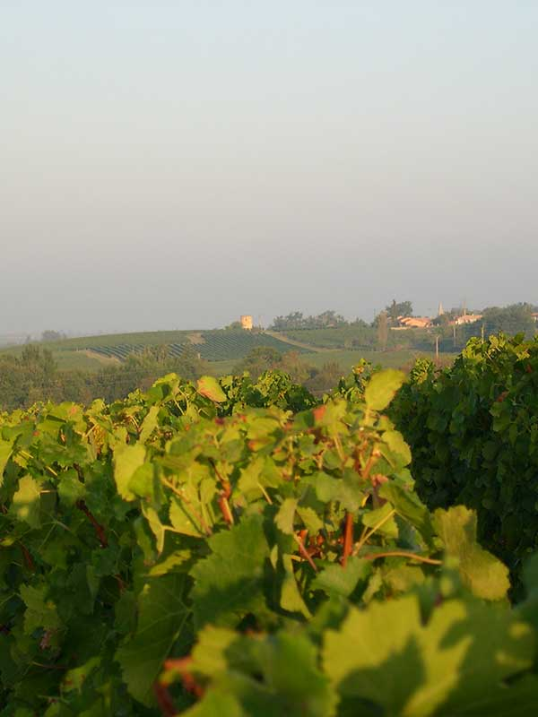
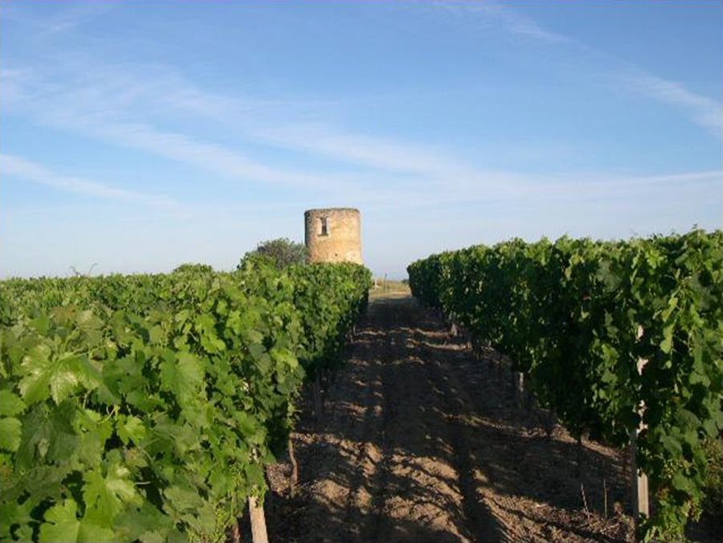
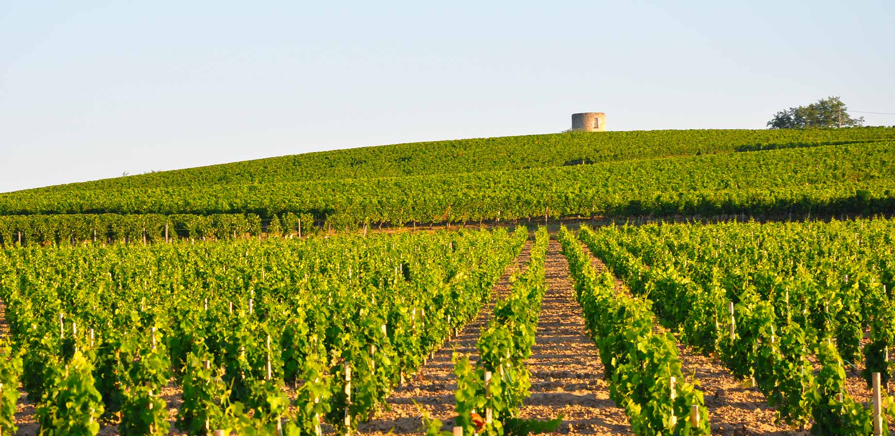

Vignoble
Un terroir généreux

Un emplacement privilégié
Sur la centaine d'hectares du domaine familial, le vignoble s'étend sur 70 hectares des terroirs les plus qualitatifs, sur des coteaux qui dominent l'estuaire de la Gironde. Nous veillons à maintenir sur les 35 hectares restants une réserve d'espaces naturels : garennes, prairies et taillis qui participent à la préservation de la biodiversité dans nos vignes.
Les vignes bénéficient d'un microclimat dû à la proximité de l'estuaire et à l'exposition en pente sud et sud-ouest des coteaux, à une altitude de 65 à 100 mètres. Cette situation protège le vignoble des gelées de printemps et des brouillards d'automne.

Un terroir généreux
Les graves argileuses qui coiffent les coteaux offrent un terrain de prédilection aux cépages noirs cabernet sauvignon, cabernet franc et malbec. À flancs de coteaux, les sols argilo-calcaires et les limons accueillent les merlots.
Les cépages blancs, sauvignon et colombard, se plaisent dans les sables bien drainés au pied des coteaux.

Une viticulture responsable
Avec une densité de 5 000 pieds par hectare, l'âge moyen de nos vignes est de 30 ans, et les vieilles vignes ont plus de 50 ans. Le domaine est engagé en faveur d'une viticulture respectueuse de l'environnement.
L'alliance du terroir, du climat et de notre travail de vignerons nous permet de vous offrir des vins d'une grande authenticité.